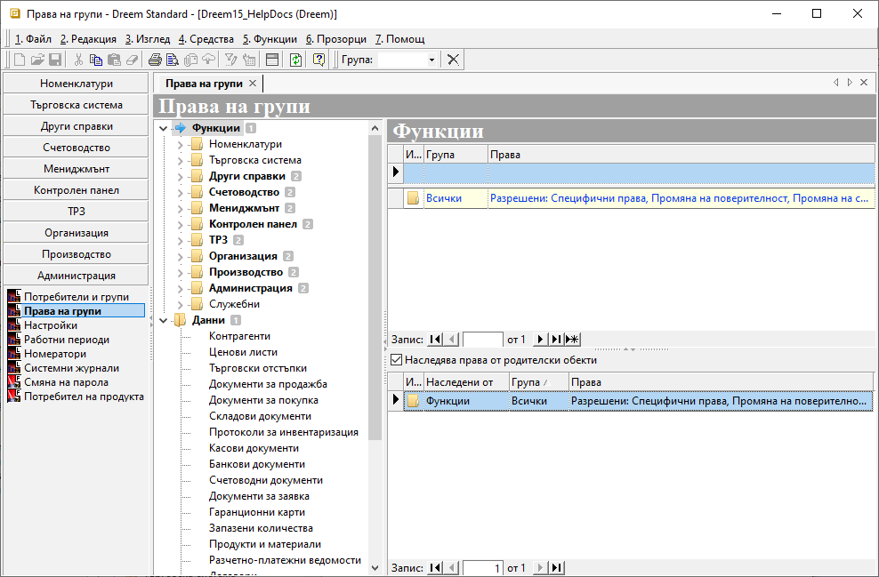
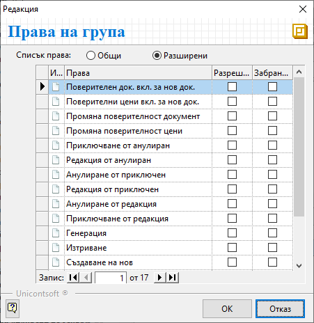
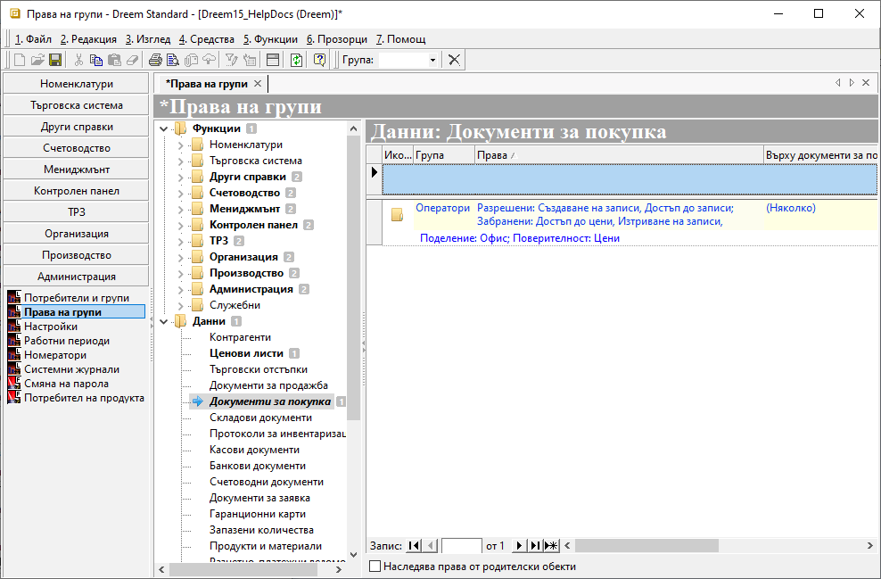
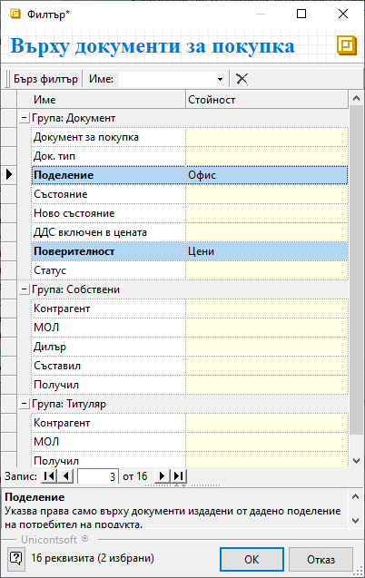

1.3.2. Права на групи#
Правата в Dreem ERP се управляват чрез меню Администрация || Права на групи. Настройките се организират по групи от избрани потребители. Потребителите се включват в подходящите групи спрямо необходимостта от ограничителни или разрешителни права.
Всеки потребител автоматично попада и в група Всички, която е системно настроена.
За да влязат в сила правата, от Администрация || Настройки || Системни: Ниво за сигурност трябва да се посочи при какви условия системата ще прилага ограниченията.
Възможните варианти са:
- *0 - Няма*: при това ниво на сигурност системата не прилага никакви ограничения в правата на потребителите;
- *1 - Само Функции*: системата прилага настройки за права върху функционалностите и различните генерации на
документи;
- *2 - Само Данни*: при това ниво на сигурност системата ограничава достъпа до съдържащите се данни;
- *3 – Функции и данни*: най-високо ниво на сигурност, при което ограниченията се прилагат едновременно
върху достъпа до функции и съдържащите се данни;
Реквизитите с настройки в Администрация || Права на групи са организирани в дървовидна структура с обекти на системата за сигурност и списъци с права за всеки от тях.
Раздел Функции съдържа всички функционалности и модули на системата. Чрез него се управляват общите операции и достъпът до отделните функционалности.

При избор на обект на системата за сигурност вдясно се визуализира списък с права за тази функционалност.
Група - поле за избор на група, за която се дефинират права за достъп;
Системата предлага в падащо меню списък с всички предварително въведени групи потребители.Права - поле за конфигуриране на разрешителни и/или забранителни права на група;
От бутон […] се отваря форма Редакция: Права на група. След избор на изглед Общи или Разширени системата визуализира списък с различни опции за настройка. Чрез поставяне на отметка в Разрешени или Забранени се дефинира достъпът по видове операции.

Наследява права от родителски обекти - настройка, която позволява за текущата функция да се активира/деактивира наследяването на ефективни права от родителски функционалности. Списък с наследени ефективни права се визуализира, когато настройката е активирана. Той включва информация за Група, за която са дефинирани права за достъп, и кратко описание на ефективните разрешителни и забранителни права.
Достъп до всички данни, валиден за всички потребители, може да се настрои чрез маркиране на раздел Функции. От списъка вдясно се обзавежда поле Група с Всички. В поле Права се отваря формата Редакция: Права на група, от която се разрешава достъп до всичко.
В раздел Данни могат да се дефинират специфични настройки за избрани детайли.
Списък с права на данни се визуализира вдясно, след като е избран обект на системата за сигурност.

Група - от падащия списък в полето се избира група, за която се дефинират права за достъп;
Групите трябва да бъдат предварително въведени.Права - поле за настройка на ефективни права върху данни;
В полето се отваря форма Редакция: Права на група. Чрез поставяне на отметки се разрешава или забранява достъп по видове операции.Върху … - в това поле се дефинират допълнителни критерии, отнасящи се до ефективните права на данни.
Бутон […] в края на полето отваря форма за избор на детайлни критерии за правата върху данните.
В колона Стойност се посочват желаните ограничения, като системата предлага за избор единствено от предварително въведени настройки.

Наследява права от родителски обекти - настройка, която позволява за текущата функция да се активира/деактивира наследяването на ефективни права от родителски функционалности.
Когато наследяването е изключено, системата сигнализира чрез промяна в шрифта на избраната функционалност от тип Данни.
Запис - бутон в лентата с инструменти за запаметяване на промените.